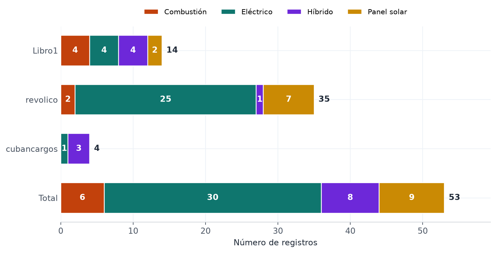
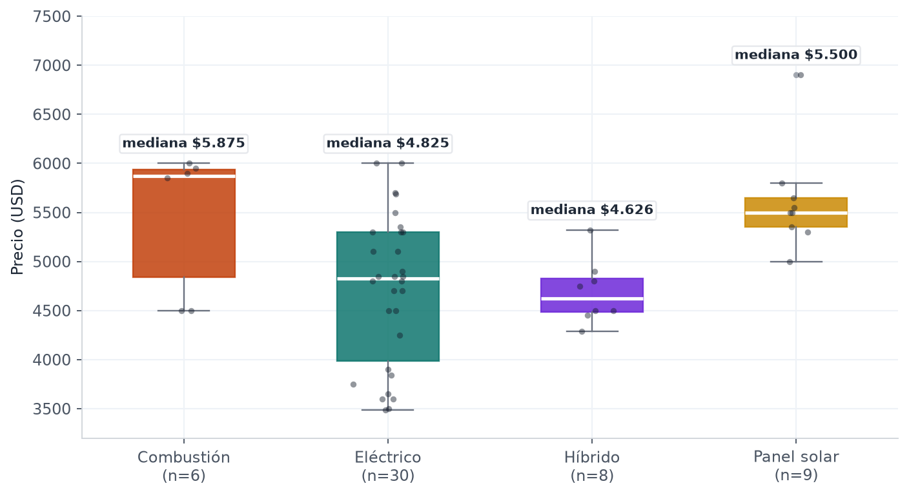
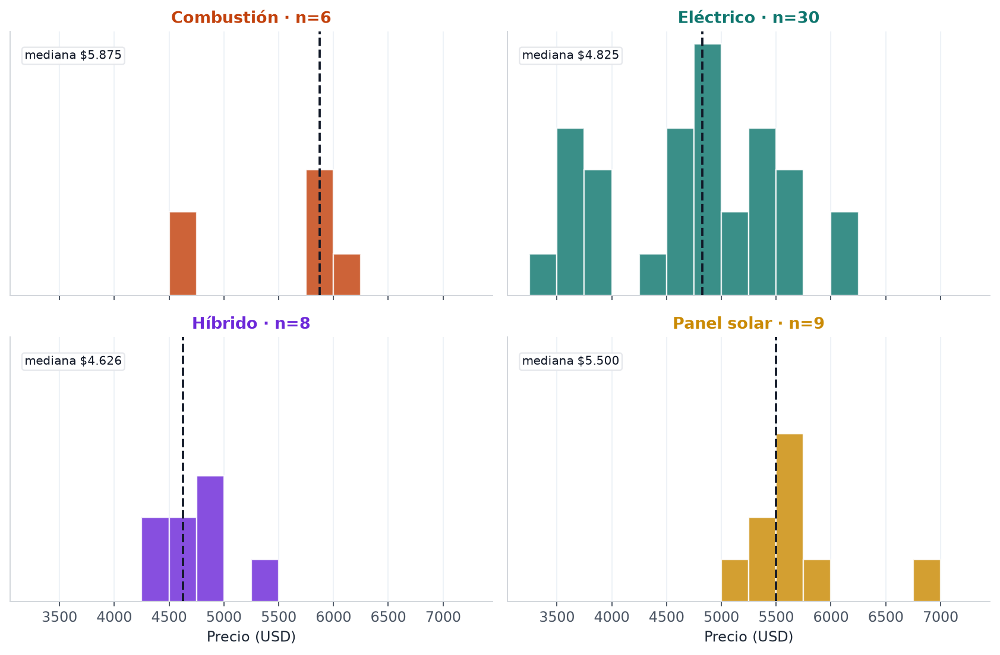
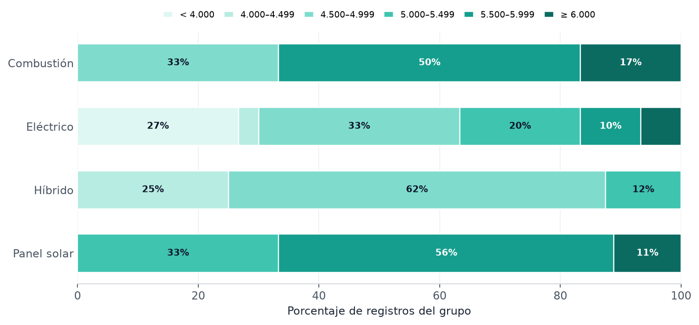
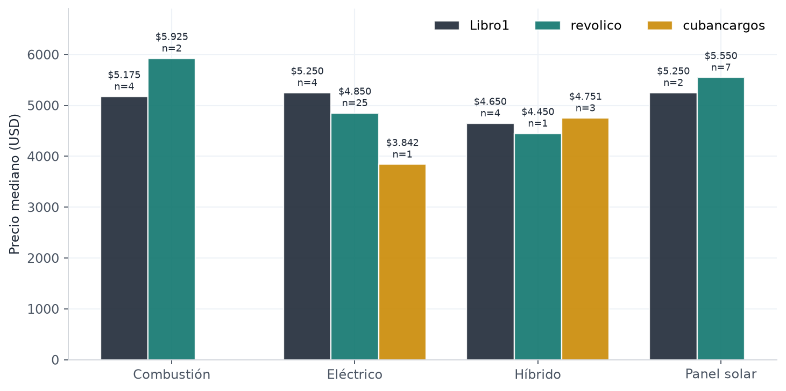
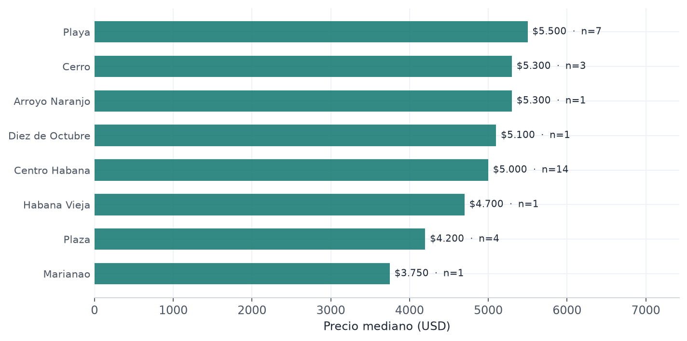
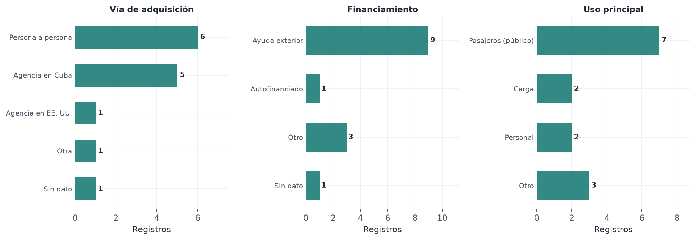
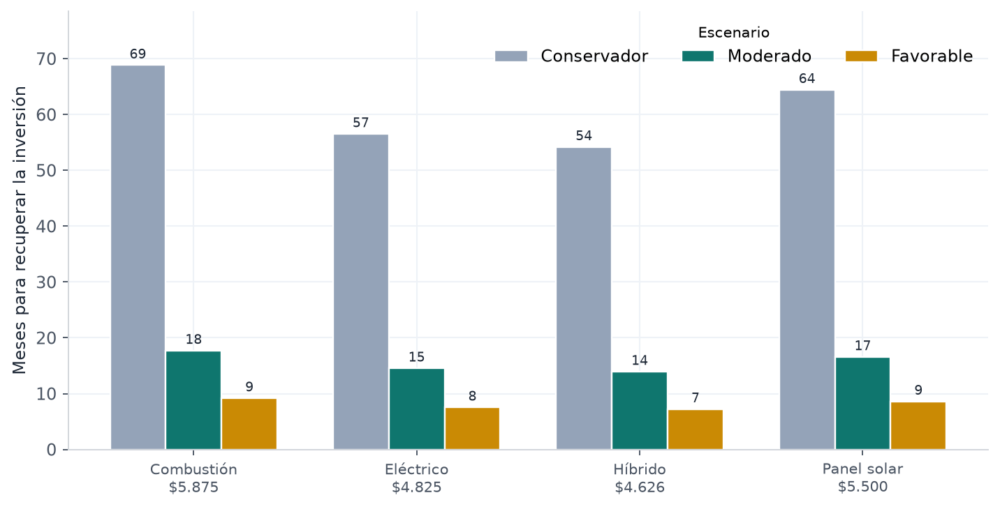
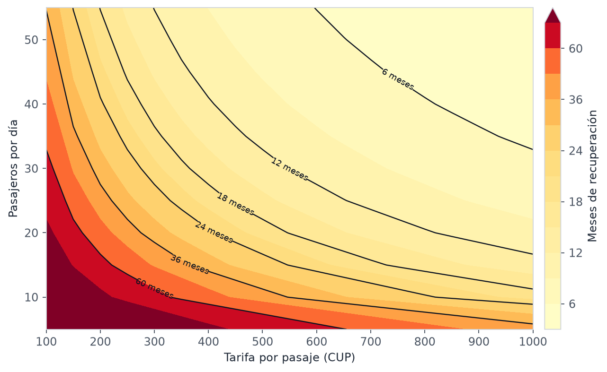
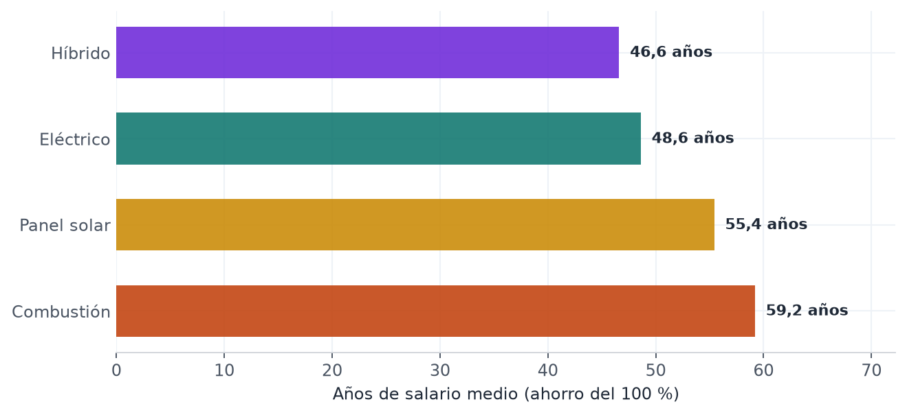

Resumen ejecutivo
Cuatro cifras y cinco ideas que resumen qué se sabe hoy sobre el mercado de triciclos en La Habana con los datos disponibles.
Precio mediano del mercado
La mitad de los {{N_TOTAL}} registros está por debajo de ese valor; el rango completo va de ${{MIN_GLOBAL}} a ${{MAX_GLOBAL}}.
El eléctrico domina el catálogo
{{N_ELEC}} de {{N_TOTAL}} registros son eléctricos, y concentran la mayor amplitud de precios (CV {{CV_ELEC}} %).
El híbrido es el más barato y homogéneo
Mediana de ${{MED_HIB}} y coeficiente de variación de {{CV_HIB}} %, el más bajo de los cuatro tipos.
Las diferencias de precio son significativas
Kruskal-Wallis sobre los cuatro tipos rechaza la igualdad de distribuciones; el par panel solar–híbrido resiste la corrección por comparaciones múltiples.
Lo esencial en cinco puntos
- Dos escalones de precio. Combustión (${{MED_COMB}}) y panel solar (${{MED_SOLAR}}) se ubican por encima de eléctrico (${{MED_ELEC}}) e híbrido (${{MED_HIB}}); la brecha entre escalones ronda los $870 y $1.050.
- La propulsión explica poco del precio. La dispersión dentro de cada tipo es grande: el eléctrico va de ${{MIN_ELEC}} a ${{MAX_ELEC}} y su coeficiente de variación ({{CV_ELEC}} %) duplica el del híbrido.
- El precio no es de transacción. Son precios de oferta (anuncios y catálogos), no precios efectivamente pagados; no se dispone todavía de una serie temporal ni de descuentos observados.
- La asequibilidad es el hallazgo de contexto. Un triciclo eléctrico equivale a {{ANIOS_SALARIO_ELEC}} años de salario medio habanero ahorrado al 100 %, lo que hace estructuralmente necesario el financiamiento externo o las remesas.
- La rentabilidad es un modelo, no una medición. Con los supuestos del proyecto, la recuperación va de {{PAYBACK_MIN}} a {{PAYBACK_MAX}} meses según escenario; la incertidumbre es demasiado alta para conclusiones definitivas sin trabajo de campo.
Estado de cumplimiento de los objetivos
| Objetivo | Evidencia | Estado |
|---|---|---|
| Recolectar y documentar la oferta | {{N_TOTAL}} registros, 3 fuentes, diccionario de variables | Cubierto |
| Distribución de precios por propulsión | Estadísticos, boxplots, histogramas y contrastes | Cubierto |
| Perfil de compradores, conductores y propietarios | Inferencias desde la oferta + instrumento listo; sin respuestas de campo | Parcial |
| Costos operativos, ingresos y recuperación | Modelo paramétrico de escenarios y análisis de sensibilidad | Modelo |
| Relación con el contexto económico | Indicadores del modelo y lectura exploratoria; faltan series oficiales actualizadas | Exploratorio |
| Limitaciones, sesgos y ética | Sección específica y protocolo de anonimización | Cubierto |
Problema y objetivos
Por qué el mercado de triciclos importa y qué preguntas guía esta investigación.
El transporte público en La Habana enfrenta limitaciones de capacidad, frecuencia, disponibilidad de combustible y condiciones de servicio. En ese contexto, los triciclos —eléctricos, híbridos o de gasolina— ganaron protagonismo como medio alternativo para pasajeros, carga y reparto. La información sobre este mercado es, sin embargo, escasa, dispersa y heterogénea: no se conoce con precisión cuánto cuestan, qué propulsión predomina, quién los compra, cómo se financian, cuánto tardan en recuperar la inversión ni qué relación tiene su auge con la crisis económica.
El problema central es la ausencia de una caracterización cuantitativa y cualitativa que permita entender la venta y el uso de triciclos en La Habana y evaluar su rentabilidad como respuesta al contexto económico actual. A ello se suma que el mercado es en gran medida informal, opera con múltiples monedas y carece de registros sistematizados.
Objetivo general
Analizar el mercado de venta de triciclos en La Habana integrando anuncios clasificados, entrevistas a conductores y propietarios e indicadores socioeconómicos, para caracterizar precios, propulsión, financiamiento, rentabilidad y su relación con el contexto económico.
Preguntas de investigación
¿Cuánto cuesta un triciclo y cómo varía por propulsión? ¿Quién compra y con qué recursos? ¿Cuánto deja operarlo y en cuánto tiempo se recupera? ¿Qué factores macroeconómicos explican su auge?
Objetivos específicos
- Recolectar y documentar datos sobre la oferta de triciclos en La Habana.
- Describir la distribución de precios según tipo de propulsión.
- Caracterizar el perfil de compradores, conductores y propietarios.
- Estimar costos operativos, ingresos y tiempo de recuperación de la inversión.
- Explorar la relación entre el auge de los triciclos y el contexto económico del país.
- Documentar limitaciones, sesgos y consideraciones éticas del estudio.
Metodología y datos
Enfoque mixto, tres fuentes cuantitativas, un instrumento cualitativo y reglas explícitas de normalización.
Diseño
El estudio adopta un enfoque mixto. La parte cuantitativa combina el scraping y la revisión de anuncios clasificados con un catálogo de importador y una libreta de cotizaciones de agencias; la parte cualitativa se apoya en un cuestionario semiestructurado a conductores y propietarios, cuyo trabajo de campo está pendiente.
| Fuente | Naturaleza | Registros | Período | Variables principales |
|---|---|---|---|---|
| revolico | Anuncios clasificados (compraventa entre particulares y mipymes) | 35 | oct. 2026 | precio, propulsión, municipio, condición |
| Libro1 | Cotizaciones de agencias y operaciones persona a persona | 14 | 2025–2026 | precio, propulsión, vía de adquisición, financiamiento, plazo, uso |
| cubancargos | Catálogo de importador con envío a Cuba | 4 | nov. 2026 | precio, propulsión, motor, batería, autonomía, capacidad, garantía |
| Total armonizado | {{N_TOTAL}} | 53 precios de oferta en USD | ||
Limpieza y normalización
- Moneda. Todos los precios se expresan en USD. Los anuncios ya estaban en USD; el catálogo también; las cotizaciones se registraron en USD. El tipo de cambio solo interviene en el modelo de rentabilidad ({{FX}} CUP/USD, referencia informal de El Toque, editable en la calculadora).
- Propulsión. Se normalizaron etiquetas dañadas por codificación («de combustiA3n», «elAcctrico», «hA-brido») a las cuatro categorías del informe: combustión, eléctrico, híbrido y panel solar. Esta última se trata como tecnología paralela de apoyo solar, no como propulsión independiente.
- Exclusiones documentadas. En Libro1 se descartaron 2 celdas que no son observaciones de mercado: una fila de promedio (5.119,23) sin propulsión y una celda suelta al final de la hoja (76.169,23). En cubancargos se descartaron las filas de especificaciones y se conservó el precio del producto, no el total con envío.
- Duplicados. No se detectaron anuncios repetidos; el identificador de cada registro conserva su origen.
- Datos personales. No se conservan teléfonos, nombres ni enlaces a perfiles de vendedores en el dataset publicado.
Cobertura de variables frente al diseño original
El diseño preveía doce variables por anuncio. La tabla siguiente documenta qué se obtuvo realmente: es la principal brecha de datos del proyecto y la prioridad inmediata de recolección.
{{TABLA_COBERTURA}}Cobertura desigual. Ninguna fuente contiene las doce variables a la vez. Fecha de publicación, marca, modelo, año y tipo de vendedor solo están disponibles de forma parcial o previa extracción manual, lo que impide hoy un análisis de series temporales y de depreciación por antigüedad.
Herramientas
Python (pandas, numpy, matplotlib), HTML/CSS/JavaScript para este informe, Git para el control de versiones. Los scripts y las tablas intermedias se incluyen en la sección de reproducibilidad.
Composición de la oferta
Qué se vende, en qué proporción y cómo cambia la mezcla según la fuente.

Lectura
El eléctrico concentra el {{PCT_ELEC}} % de la oferta ({{N_ELEC}} de {{N_TOTAL}}), impulsado casi por completo por los clasificados: en revolico son 25 de 35 anuncios. La mezcla cambia según el canal: Libro1 está equilibrado (4 eléctricos, 4 híbridos, 4 de combustión y 2 de panel solar), mientras cubancargos solo publica 3 híbridos y 1 eléctrico. No hay ninguna ficha de gasolina en el catálogo del importador, pese a que su web anuncia «+10 modelos» de gasolina.
Esa diferencia no es solo de composición: los canales parecen segmentos distintos del mercado. Los clasificados son el espacio del particular y la mipyme; Libro1 recoge la vía de la agencia y el financiamiento; cubancargos representa la importación formal con entrega a Cuba.
Sobre la categoría «panel solar». En este informe se clasifica como una tecnología paralela al eléctrico y al híbrido: no se trata de una propulsión independiente, sino de una variante con apoyo solar (el PORTO BELLO es un híbrido con panel de 580 W que el importador clasifica como «híbrido»). Se mantiene como categoría propia porque así aparece en los anuncios y porque esa especificación es de gran interés al comprar: incide en autonomía, costo y mantenimiento.
Distribución de precios por propulsión
El núcleo cuantitativo del informe: nivel, dispersión, forma y contrastes.
Estadísticos descriptivos
{{TABLA_PRECIOS}}

Bandas de precio

Qué muestra la forma
El eléctrico es el grupo más numeroso y el más disperso: su rango intercuartílico va de ${{Q1_ELEC}} a ${{Q3_ELEC}} y su coeficiente de variación ({{CV_ELEC}} %) es el más alto. La distribución es bimodal: una gama de entrada por debajo de $4.300, casi toda procedente de clasificados, y una gama media entre $4.700 y $5.700.
El híbrido es el más compacto (CV {{CV_HIB}} %, rango ${{MIN_HIB}}–${{MAX_HIB}}). Los tres modelos del catálogo (4.286, 4.751 y 5.320) caen dentro de la banda ya observada en las otras fuentes, lo que refuerza la consistencia del grupo.
El panel solar se comporta como gama alta estable: 8 de sus 9 registros se ubican en $5.000 o más y el único valor extremo es $6.900, también el máximo global. La combustión, con solo {{N_COMB}} casos, es la más difícil de interpretar: mezcla dos segmentos (dos unidades a $4.500 y dos entre $5.850 y $6.000 en Libro1, frente a $5.900–5.950 en revolico). Su mediana alta depende de muy pocas observaciones.
Contrastes estadísticos
{{TABLA_TEST}}El contraste de Kruskal-Wallis rechaza la igualdad de distribuciones (H = {{KW_H}}, p = {{P_VALUE}} con 20.000 permutaciones; corrección por empates aplicada). La prueba de Brown-Forsythe no encuentra evidencia de varianzas distintas (F = {{BF_F}}, p = {{BF_P}}), de modo que las diferencias son de nivel, no de dispersión.
{{TABLA_PARES}}Precaución con los pares. Hay seis comparaciones y grupos muy desbalanceados (de 6 a 30 casos). Con corrección de Bonferroni (α = 0,0083) solo sobrevive panel solar frente a híbrido (p = 0,0043). Las demás diferencias deben leerse como indicios consistentes, no como resultados confirmatorios.
Fuente y territorio
El precio no solo depende de la propulsión: el canal de venta y el municipio también pesan.
Medianas por fuente
{{TABLA_MEDIAS_FUENTE}}
El canal importa. Para el mismo tipo eléctrico, la mediana de revolico ($4.850) supera en más de $1.000 a la del catálogo del importador ($3.842), y Libro1 se sitúa en $5.250. En híbridos, en cambio, las tres fuentes convergen en una banda estrecha ($4.450–$4.751). Esto sugiere que el sobreprecio del canal informal se concentra en el segmento eléctrico de mayor rotación.
Distribución territorial
Solo los anuncios de revolico aportan municipio (32 de 35 registros). La muestra se concentra en Centro Habana y Playa, lo que refleja tanto la geografía de la oferta como el sesgo de recolección.
{{TABLA_MUNICIPIOS}}
No confundir geografía con causalidad. Centro Habana y Playa concentran la oferta y también los precios más altos, pero el municipio está correlacionado con el tipo de propulsión y con el tipo de vendedor. Con esta muestra no es posible separar ambos efectos.
Financiamiento y perfil del comprador
Lo que la oferta permite inferir sobre cómo se paga un triciclo y quién lo usa, y lo que todavía falta preguntar.
Compra con ayuda exterior
9 de los 14 registros de Libro1 declaran financiamiento con ayuda de familiares o personas en el exterior.
Vía de agencia
6 de 14 operaciones se hicieron a través de una agencia en Cuba o en EE. UU.; el resto fue persona a persona u otra vía.
Plazo típico de financiamiento
Entre los registros con plazo declarado, el más frecuente es de 3 años; hay casos de 1, 1,5, 2 y 5 años.

Perfil inferido (hipótesis, no medición)
El comprador típico que sugiere la oferta no es un asalariado que ahorra: es una persona con acceso a divisas o a una red familiar en el exterior, que adquiere el vehículo mediante agencia o persona a persona y lo destina a transporte público de pasajeros. Siete de los catorce casos de Libro1 declaran uso «transporte de personas-público»; el resto se reparte entre uso personal, carga y «otro».
Esta lectura es coherente con la brecha de asequibilidad que se documenta en la sección 09, pero no sustituye el trabajo de campo: no hay todavía respuestas de conductores ni de propietarios que permitan medir ingresos, gastos, accidentes o percepción del mercado.
Instrumento de entrevista
El cuestionario semiestructurado ya está diseñado (9 preguntas para conductores y propietarios). Cubre vía de compra, precio pagado, expectativa de recuperación, tenencia, forma de pago, uso, accidentes, percepción de rentabilidad y tipo de propulsión.
| Bloque | Preguntas | Variable que produce |
|---|---|---|
| Compra | Vía, precio pagado, forma de pago, plazo | canal, precio de transacción, fuente de financiamiento |
| Tenencia y uso | Propietario o arrendado; uso principal | régimen de tenencia, destino del vehículo |
| Operación | Ingresos, gastos, accidentes | margen operativo, siniestralidad |
| Percepción | Rentabilidad esperada, tiempo de recuperación | expectativas y confianza en el mercado |
Estado: pendiente de campo. No se presentan respuestas de entrevistas porque no existen todavía. Publicar cifras inventadas o «ilustrativas» sería contrario al principio de transparencia del proyecto. La sección 10 detalla el plan de levantamiento y el consentimiento informado.
Rentabilidad y recuperación de la inversión
Un modelo de escenarios con supuestos explícitos y una calculadora para explorar la sensibilidad.
Esto es un modelo, no una medición. Los ingresos y costos no provienen de entrevistas: son supuestos paramétricos calibrados con el precio de oferta y un margen de costos. Sirven para comparar tipos de vehículo y escenarios, no para afirmar cuánto gana un conductor real.
Supuestos
{{TABLA_SUPUESTOS}}Resultados por escenario
{{TABLA_ESCENARIOS}}Tiempo de recuperación
{{TABLA_PAYBACK}}
La inversión por sí sola explica poco: el factor decisivo es el volumen de ingresos. Pasar del escenario conservador (200 CUP por pasaje y 20 pasajeros al día) al moderado (450 CUP y 30 pasajeros) reduce el tiempo de recuperación de unos {{PAYBACK_CONS}} meses a unos {{PAYBACK_MOD}} meses para un eléctrico. Esa diferencia es cuatro veces mayor que la que separa a un tipo de propulsión de otro.
Análisis de sensibilidad

Calculadora interactiva
Modifica los supuestos para ver cómo cambia el resultado. Los valores iniciales reproducen el escenario moderado del modelo y el precio mediano de cada tipo de propulsión.
Supuestos operativos
Todos los campos son editables; no se guarda ningún dato.
Modelo determinista: no incorpora estacionalidad, averías, impagos ni depreciación. La barra compara el resultado con una ventana de 5 años.
Contexto socioeconómico
La brecha entre el precio del vehículo y el ingreso salarial como clave del auge.
La pregunta que ordena esta sección es simple: ¿cuánto representa un triciclo en la economía de un hogar habanero? El ejercicio compara el precio mediano de cada tipo con el salario medio mensual de La Habana, convertido a USD al tipo de cambio informal de referencia (El Toque). La inflación anual pasó de 25,19 % en agosto a 28,44 % en septiembre de 2026 (Trading Economics y ONEI), lo que erosiona el poder de compra del salario en CUP y refuerza la hipótesis de que la inversión se financia con divisas.
{{TABLA_CONTEXTO}}
Hipótesis de trabajo
Un triciclo eléctrico equivale a {{ANIOS_SALARIO_ELEC}} años de salario medio ahorrado íntegramente, y uno de combustión a {{ANIOS_SALARIO_COMB}} años. Esa brecha hace prácticamente imposible la compra con ingreso laboral local y explica por qué el financiamiento con ayuda exterior aparece en dos tercios de los casos observados en Libro1.
La hipótesis que se deriva —y que el trabajo de campo debe contrastar— es que el auge de los triciclos no responde solo a la crisis del transporte público, sino a la combinación de tres factores: demanda insatisfecha de movilidad, acceso a remesas que financian la inversión y expectativa de un retorno rápido en un mercado dolarizado.
Indicadores verificados y pendientes. El salario medio mensual de La Habana se toma de la ONEI y el tipo de cambio informal de 900 CUP/USD se toma como referencia de El Toque. La inflación anual se actualizó a 28,44 % en septiembre de 2026, frente a 25,19 % en agosto, según Trading Economics y la Oficina Nacional de Estadística de Cuba. El precio del combustible y el flujo de remesas siguen marcados como pendientes y no se usan en los cálculos.
Entrevistas: instrumento y plan de campo
Qué se va a preguntar, a quién y cómo se protegerá la información.
Cuestionario para conductores y propietarios
- ¿Cuál fue la vía para comprar el vehículo? (internet/redes, agencia en Cuba, persona a persona, otra)
- ¿Cuál fue el precio pagado?
- ¿En cuánto tiempo considera que puede recuperar la inversión?
- ¿Es dueño del vehículo o lo tiene arrendado?
- ¿Cómo pagó? (autofinanciado, ayuda de familiar o persona en el exterior, otro)
- ¿Cuál es el uso principal? (personal, transporte público de personas, carga, otro)
- ¿Ha tenido algún accidente?
- Si lo usa como negocio, ¿lo considera rentable?
- Tipo de propulsión del vehículo.
Diseño muestral propuesto
| Componente | Propuesta | Justificación |
|---|---|---|
| Conductores y propietarios | 30–40 entrevistas, cuota por municipio y propulsión | Permite comparar grupos sin pretender representatividad estadística |
| Selección | Bola de nieve con puntos de entrada en paradas y talleres | El mercado es informal y no existe marco muestral |
| Registro | Formulario estandarizado + audio solo con consentimiento | Permite codificar y anonimizar |
Pendiente. El instrumento está diseñado, pero no aplicado. Cualquier cifra de ingresos, gastos o recuperación que se publique antes del campo será un supuesto del modelo, no un hallazgo empírico.
Limitaciones, sesgos y ética
Qué no permite afirmar este estudio y cómo se protegió a las personas y a las fuentes.
Limitaciones de los datos
- 53 registros no constituyen una muestra aleatoria del mercado.
- Son precios de oferta, no de transacción; no reflejan descuentos ni regateo.
- No hay serie temporal: una sola fotografía por fuente.
- El catálogo aporta solo 4 modelos y todos figuran «agotados».
- La categoría «panel solar» se trata como tecnología paralela: agrupa variantes con apoyo solar, no una propulsión homogénea.
Sesgos identificados
- Selección: los anuncios visibles sobrerrepresentan la oferta formal y de mayor precio.
- Supervivencia: los vehículos que no se venden no aparecen.
- Fuente: cada canal tiene su propio segmento de precio y de cliente.
- Desconfianza en la mayoría de los entrevistados (riesgo): la reserva ante preguntas sobre ingresos, propiedad y actividad informal puede provocar subdeclaración o negativa a responder.
- Sesgo de memoria al estimar tiempos de recuperación.
Protocolo ético y legal
- Consentimiento informado verbal y escrito antes de cada entrevista, con explicación del uso académico y del derecho a retirarse.
- Anonimato: se eliminan nombres, teléfonos, direcciones y cualquier identificador indirecto; los registros se publican agregados.
- Datos de anuncios: no se conservan datos de contacto de vendedores; solo variables de mercado.
- Términos de uso: se consultaron los términos y
robots.txtde los sitios con acceso automatizado; cuando la extracción masiva no estaba autorizada, la revisión de clasificados se hizo mediante capturas y registro manual. - Transparencia: los supuestos del modelo, el tipo de cambio y las exclusiones están documentados y son editables.
Sobre las múltiples monedas. Convertir CUP a USD a 900 CUP/USD usa la referencia informal de El Toque. Un cambio de ese tipo de cambio altera la comparación con el salario, pero no los precios en USD ni las conclusiones sobre propulsión.
Reproducibilidad y datos abiertos
Todos los números del informe se regeneran con los scripts incluidos.
Estructura del proyecto
CD/
├── Libro1.xlsx # cotizaciones de agencias
├── revolico_triciclos.csv # anuncios clasificados
├── catalogo_triciclos_cubancargos.csv # catálogo del importador
├── dataset_unificado_triciclos.csv # 53 registros · 22 variables
├── analisis_unificado_triciclos.py # unión + estadística + gráficos
├── extraer_triciclos_cubancargos.py # scraper reproducible
├── modelo_recuperacion_triciclos.xlsx # modelo financiero original
└── informe/
├── index.html # este informe
├── generar_informe.py # genera tablas y figuras
└── assets/Reproducir
python extraer_triciclos_cubancargos.py # actualiza el catálogo (opcional)
python analisis_unificado_triciclos.py # dataset + estadística + figuras
python informe/generar_informe.py # regenera este HTMLDescargas
Tabla completa de registros
Filtra por fuente, tipo o texto y ordena haciendo clic en los encabezados.
| Fuente | ID | Propulsión | Precio USD | Condición | Municipio | Uso | Adquisición | Autonomía km | Carga kg |
|---|
Conclusiones y próximos pasos
Qué se puede afirmar hoy, qué queda como hipótesis y qué haría falta para cerrar la brecha.
Conclusiones
- El mercado está dominado por la propulsión eléctrica ({{PCT_ELEC}} % de la oferta), pero esa mayoría convive con una gran heterogeneidad de precios: el mismo tipo de vehículo se ofrece entre ${{MIN_ELEC}} y ${{MAX_ELEC}}.
- La propulsión ordena el precio en dos escalones: combustión y panel solar arriba; eléctrico e híbrido abajo. La diferencia entre escalones es estadísticamente detectable, aunque solo el par panel solar–híbrido resiste la corrección por comparaciones múltiples.
- La dispersión interna supera la diferencia entre tipos. El precio depende más del modelo, el estado, el canal y el municipio que de la tecnología de propulsión.
- La compra no se financia con salario. Un triciclo equivale a décadas de salario medio; la ayuda exterior aparece en dos tercios de los casos con información de financiamiento.
- La rentabilidad es plausible pero no está medida. El modelo arroja recuperaciones de {{PAYBACK_MIN}} a {{PAYBACK_MAX}} meses según escenario, con una sensibilidad enorme al volumen de pasajeros.
Cierre
Los datos disponibles alcanzan para describir con rigor la oferta y su estructura de precios, y para construir un modelo de rentabilidad transparente. No alcanzan, en cambio, para afirmar cómo opera el mercado desde dentro. Ese es el paso que sigue: convertir los supuestos en observaciones y volver a estimar.